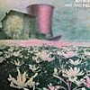
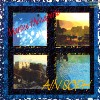
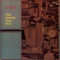
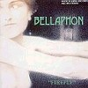
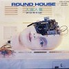
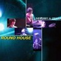

strange music page
japanese progressives * * * ain soph
- アインソフ (ain soph/studio)
- アインソフ (ain soph/live)
- ベラフォン (bellaphon)
- ラウンドハウス (round house)
|
#アインソフは神戸のジャズロックバンドです。キャメルとかキャラバンとかの音を感じさせるような、メロディアスなバンドです。なんだかジャズ聴く人からもフュージョン聴く人からもプログレ聴く人からもちょっとずつ遠慮されているようで、不当に評価が低いような気がしますけど、日本のプログレ系の中でも独特の音を出す面白いバンドだと思います。
神戸の震災の前くらいに新作を出すとかって話が有ったみたいなんですけど、地震のせいで全部立ち消えになっちゃったみたいです、それ以降は活動休止状態らしくって.....ほんとに残念です。
BELLAPHONE OFFICIAL
ROUND HOUSE
|
#キングレコードからの1枚目のアルバム、keyboardが藤川さんから服部眞誠さんにかわっています。服部眞誠さんはこの後アインソフを抜けてフュージョンの99.99を結成しています。
過去のライヴ音源とか
海の底の動物園とか聴いてるのでこのアルバムだけちょっと方向性が違うような気もしてるんですけど。
- Crossfire
- Interlude I
- Natural Selection
- ブライアンスミスの主題による変奏曲 (variations on a theme by Brian Smith)
- 組曲: 妖精の森 (a story of mysterious forest)
- 目覚め (awakening)
- 密かな憧憬-微風 (longing-with the wind)
- 神秘の森 (mysterious forest)
- 燃ゆる想い (passion)
- 深き眠り (deep sleep)
- 闇夜の中で (darkness)
- 小人たちの踊り (dance)
- 予言者の告示[失意] (misfortune)
- 神秘の森 (mysterious forest)
- 目覚め (awakening)
- Interlude II
- 山本要三 (guitars)
- 服部眞誠 (keyboards)
- 鳥垣正裕 (bass)
- 名取寛 (drums)
KING RECORDS/NEXUS: KICS-2513
#よーやく再発されました、
クイックサンドを聴いた時に「前回の再発の時になんで買わなかったんだろー」とか思ってたアインソフ2枚目。ずーっと廃盤でした。
ちなみにドラムの富家大器さんはこのアルバムからですね、ずーっと
海の底の動物園からだと思ってました。訂正して謝罪します、ごめんなさい。
あと、キーボードも服部さんは
99.99を結成のために脱退して、天地創造時代の藤川さんに戻ってます。この人の方が地味だけど味が有って好きです。
たぶんプログレな人達の中ではカンタベリなバンドとして認知されてるんでしょうけど（このアルバムタイトルとか、そのまんまですし）ずーっと個人的には「カンタベリ？」って感じでした、ちょっと風変わりな曲展開の多いインストのロックといった印象です。
1枚目よりも地味ですけど、曲はこっちの方が好きです。ちょこちょこ挟まってる'little piece'とかいいなぁ。こーゆーメロディーを聴くようなインストのバンドって（特に最近は）なかなか無いので、また活動して欲しいです。(2002.2.13)

- 白鳥の湖 (the swan lake)
- 小品パート１ (little piece part 1)
- 組曲: 帽子と野原
- トリプル・エコー
- ハット＆フィールド
- 深海の話 (deel feelin')
- トリプル・エンド
- スペイン海峡 (spanish channel)
- 霧 (mizzle)
- カンタベリー物語 (canterbury tale for Pye Hasting & Richard Sinclair)
- 小品パート２ (little pieces part 2)
- パイプ・ドリーム (pipe dream)
- 山本要三 (guitars)
- 藤川喜久男 (keybaords)
- 鳥垣正裕 (bass)
- 富家大器 (drums)
KING RECORDS/NEXUS KICS-2897 (1986)
#1991年のアルバムで、昔の曲を新録したアルバムになります。"ブライアンスミス..."は1枚目にも収録されてますがかなり雰囲気が違います、ジャズ色が強くなった感じですね。"駱駝に乗って"はやっぱりちょっとキャメルっぽかったりします。でも結構お気に入りのアルバムです。

- Wind & Water
- 光を集めて (flooded by sun light)
- 海の底の動物園 (marine menagerie)
- Little pieces part 3
- ブライアンスミスの主題による変奏曲 (variations on a theme by Brian Smith)
- 駱駝に乗って (ride on a camel)
- Metronome 7/8
孔雀の羽根 (peacock's feather)
Metronome 7/8 (reprise)
- 山本要三 (guitars)
- 藤川喜久男 (keybaords)
- 富家大器 (drums,percussions)
- 鳥垣正裕 (bass)
MADE IN JAPAN RECORDS: MCD-2921 (1991)
#スタジオ盤としては最後のアルバムになります。これが出た頃って多分新宿のEDISONからプログレコーナーが無くなるちょっと前くらいで、MADE IN JAPAN RECORDもなんかゴチャゴチャしてたみたいで、あんまり枚数出て無いみたいです。結構レアなのかも。
内容的には、うーん結構テクニカルな曲の比率が多くなったように思います。(昔の曲ですが)"ルーサの谷間"とか良い曲だなと思いました。

- ハドリアヌス帝の別叢にて (villa adriana)
- イマージュの２つの秩序 (the two orders of image)
- いにしえの断片 (fragments from the pass)
- 古代博物館 (ancient museum)
- 海の絵 (seascape: little pieces part 4)
- ルーサの谷間 (the valley of lutha)
- 雲と影 (shadow picture)
- 風の香り (little wind)
- 石の妖怪 (stonehenge)
- 山本要三 (guitars)
- 藤川喜久男 (keybaords)
- 富家大器 (drums,percussions)
- 鳥垣正裕 (bass)
MADE IN JAPAN RECORDS: MCD-2925 (1992)
- 駱駝に乗って (ride on camel)
- Metronome 7/8
- オデッサの階段 (oddessa)
- 哀しみのアリア (aria)
- 七面鳥の行進 (turkeys march)
- 神秘の森 (a story of mysterious forest)
#BELLE ANTIQUEからのライヴリリース第2弾です。6曲目"真空時代"はサックスのゲストが二人も入って、アインソフにしては珍しくアヴァンギャルドな感じの曲です。録音は1977-78の音源です、天地創造時代の音源です。特に嬉しかったのは"海の底の動物園"のライヴ音源が聴けた事でした。他の曲もやっぱ良いです。
- 遥かなる目的地 (beyond the place)
- タイムマシーン
- 過去への扉 (mysterious triangle)
- ジャングルジム
- 沈む太陽 (sleeping sun)
- 真空時代 (the lost era)
- ルーサの谷間 (the valley of lutha)
- 海の底の動物園 (marine menagerie)
- 山本要三 (guitars)
- 藤川喜久男 (keybaords)
- 名取寛 (drums)
- 鳥垣正裕 (bass)
- 長尾ひさし (electric sax on 6.)
- 森ひでき (sax on 6.)
BELLE ANTIQUE: BELLE-9336
#発掘ライヴ音源シリーズその3。こんなマイナーなバンドのライヴを3枚も出ると思いませんでした。たぶん相当プログレ好きな人でもあんまり3枚全部買おうとは思わないでしょう。
まぁでもキャラバンとかキャメルを感じるようなジャズロックなんてこのバンドからしか聴けないので、このライヴ盤は...帽子と野原のちょい後くらいかな? ツインキーボードな曲とかも有って、かなり(いわゆる)プログレ寄りの音。
- A Cloudy Sky 1
- 白鳥の湖 (the swan lake)
- A Cloudy Sky 2
- 魔法のじゅうたん (magic carpet)
- Moon Watch
- Quick Sand
- Little Pieces 5
- ブライアンスミスの主題による変奏曲
- Little Pieces 6
- 古代博物館 (ancient museum)
#アインソフと関係の深いバンドです、MADE IN JAPAN RECORDから1987年に出た1枚目のアルバムです。アインソフと同じくキャラバンやキャメルの影響を感じるいわゆるシンフォニックなジャズロックです。ボーナストラックの8曲目のアタマなんてキャラバンの
夜毎太る...のラス曲そっくりだけど。
プログレっぽいトリッキーな展開を持った曲とかもありますけど、それよりもちょっと叙情的な(あーこの表現あまり使いたくなかったんだけど)少し展開を持ったような曲の方が好きです。時折見え隠れするアコースティックな感じとか、とてもイイと思います。キーボードの音、ちょっとチープだけど。
ちなみに、まだまだ現役活動中で、
H.P.はこちらです。
プログレ系のインストバンドとは違うし、ジャズロックともちょっと違いますし、なかなか置き場所の無さそうなバンドなんですけど、結構好きなんで頑張ってほしーです。

- Jade
- Le Petit Prince (星の王子様)
- Mistral
- Belle de Jour (昼顔)
- Vent du Midi (南風)
- Evros
- Firefly
- Labyrinth
- 田中稔裕 (guitars)
- 垣光隆 (keyboards)
- 富家大器 (drums)
- 鳥垣正裕 (bass)
MADE IN JAPAN RECORDS: MJC-1013 (original release 1987)
#アインソフの"妖精の森"時のdrumsの名取寛が在籍した関西のバンド、残存したテープが音源らしく音は余り良くないんですけど、曲がすごい良いです。いわゆるプログレな曲ですけど"引き"の部分のメロディーが結構キます、いやほんとに。全ての曲を加藤正之さんが書いてるみたいですけど、ほんとに俺好みの書く人....今何してるんでしょうかね？
録音は1978年頃、これももう廃盤です。というか再発はまず有り得ないと思います、見かけたら買っておいて損はしないと思います(無いと思うけど、無茶な値段がついてなきゃ)
追記:なんだか21世紀を迎えて復活したらしいとの情報。(2001.2.12)
更に追記:したらしいどころか、HPができてて復活ライヴのCDを通販してます、
ここですなんだかビックリ。リアルオーディオも聴けます、行ってみましょう。(2001.8.23)

- 人造人間
- 深海旅行
- 最後の判決
- 三次元を離れて
- 水車小屋の朝
- 加藤正之 (guitars)
- 藤井義信 (guitars)
- 染田清治 (keyboards)
- 上村義昭 (bass)
- 名取寛 (drums)
MADE IN JAPAN RECORDS: MHD-25016
#2001.7.14の15年振りの復活ライヴを収録したCD-R。キーボードはレヴェルツィオーネの片岡さん、もう一人のギターはローゼス(だったと思う)の田村さん。
何がって
上のCDの未収録曲聴けたのが嬉しいです、「ロマンティックラリー」とか良いです。演奏はともかくとして、したけどやっぱり曲の良さが気持ちよいバンドだなと思いました。12月の東京ライヴが楽しみ。
ちなみにこのCDは
ROUND HOUSEのサイトで通販されてます。(2001.9.30)

- 最後の判決
- ロマンティックラリー
- 三次元を離れて
- 祈り
- SWEET LOVE
- スフィンクスの涙
- 深海旅行
- 人造人間
- スーパーワープ
- 加藤正之 (guitars)
- 上村義昭 (bass)
- 名取寛 (drums)
- 田村励武 (guitars)
- 片岡祥典 (keyboards)
MUSIC TERM: MTP-101 (2001.9.10)
#ラウンドハウス未発表音源の再発です、これもCD-R盤ですけどどんな形でも好きなバンドの音源が聴けるのは嬉しいです。
人造人間が主に70年代からの曲が収録されているのに対して、こっちはもう少し新しい音源みたいで、ジャズとかクロスオーバーの要素が多めになってます。(１曲目はどプログレだけど）
80年代初期っぽいシンセの音はちょっとチープですけど、プログレらしい展開と惹きつけるメロディーがイイです。やっぱり曲の良さが勝ってるように思います。(2002.4)
- 赤い薔薇と悪魔の囁き
- エンドレス・リープ
- 華麗なる危険人物
- 安息への翼を求めて
- 雨上がりの都会
- ソフティー・ミスト
- スフィンクスの涙
- 海風
- SWEET LOVE (Band Version)
- 加藤正之 (guitars)
- 上村義昭 (bass)
- 名取寛 (drums)
- 染田清治 (keyboards)
- 藤井義信 (guitars)
MUSIC TERM: MTP-103 (2002.4.1)